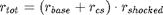
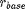
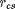
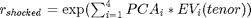

Contents
Calculate
This class performs IM Calculations and prepares reports.
Properties
- configFile Char
- corrMat NonMarketCorrMatrix
- creditSpread Struct
- cube Cube
- forexCol ForeignExchange
- instCol InstrumentCollection
- parameters Struct
- portfolio Portfolio
- results Cell
- scenCol ScenarioCollection
- utilities Utilities
private
- shockedInterestLib Cell
Methods
- obj = Calculate(configFile) constructor
- obj = calcInterestRate(obj)
- [obj, errorMsg] = processConfigFile(obj, varargin)
- PCA = processPcaFile(obj, varargin)
- [obj, errorMsg] = runTopLevel(obj, varargin)
- [result, errorMsg] = run(obj, confidenceLevel, reportingCurrency, varargin)
- errorMsg = reportTopLevel(obj, varargin)
- errorMsg = report(obj, reportFlnm, result, varargin)
- obj = calcShockedProperties(obj)
- table = getShockedPropTable()
Calculate constructor
obj = Calculate(configFile)
Input:
- configFile Char
calcInterestRate
obj = calcInterestRate(obj)
Interest Rates depend on a tenor and a risk-driver (optional). Therefore, Interest Rates are calculated per instrument.
Calculate Total Interest Rate:

with:
 = Base Interest Rate as function of tenor
 = Credit Spread Interest Component as function of riskDriver

The 'shocked interest' component may be readily available for particular tenors. This library is implemented for performance purposes: 'Rshocked' is the most demanding interest component, re-using is deemed beneficial for large EC Calculations.
processConfigFile
[obj, errorMsg] = processConfigFile(obj, varargin)
Process configuration file. Should contain:
- instruments file name
- scenarios file name
- portfolio file name
- interest rate curve file name
- correlation matrix file name
- mapping Base entity file name
- mapping Risk type file name
- pcaFile (Under Development)
- foreign exchange file
processPcaFile
PCA = processPcaFile(obj, varargin)
Process PCA file.
1. Read raw PCA data For allocating
runTopLevel
[obj, errorMsg] = runTopLevel(obj, varargin)
Top-Level IM Calculation method. In case the user requests a batch-run of multiple confidence levels, this is handled here. A results structure is build, one for each run.
run
[result, errorMsg] = run(obj, confidenceLevel, reportingCurrency, varargin)
Perform individual Internal Market Run
reportTopLevel
errorMsg = reportTopLevel(obj, varargin)
Top-Level Reporting method. Reports are generated for each confidence level, for each reporting currency.
report
Create individual report errorMsg = report(obj, reportFlnm, result, varargin)
calcShockedProperties
obj = calcShockedProperties(obj)
getShockedPropTable static
table = getShockedPropTable()
Table is a cell matrix with columns being:
- Instrument Class Name
- Instrument Property (as defined in class)
- Prefix in scenario file
- Post fix
- evaluation to obtain base value